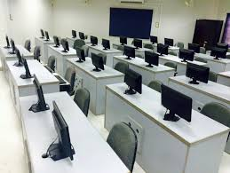

Oprema u laboratoriji
- 16 radnih stanica
- Dva Smart LED televizora
- Server
- Bežična mrežna oprema
- Najnoviji modelei tableta
- Gear uređaji
1.Godina
FWT
RP
Laboratorija je zamišljena kao centar u kome će studenti raditi na praktičnim projektima i razvoju svojih ideja i aplikacija, kako bi kasnije lakše došli do posla u struci.Partnerstvo kompanije Samsung i Elektrotehničkog fakulteta ima za cilj i poboljšanje kvaliteta nastave, podsticanje profesora i studenata da primjenjuju savremene informatičke tehnologije ne samo u svakodnevnoj nastavi, već i u realizaciji naučnih i praktičnih projektnih zadataka i studentskih radova.
2. Godina
RMA
TP
Oprema u laboratoriji
- 15 radnih stanica
- Pametna tabla
- Projektor
- Ruter

1.Godina
UUP
UBP
Laboratorija je namjenjena za pretmete koji se fokusiraju na programiranje. Računari imaju na sebi instaliran Linux operativni sistem jer je na njemu lakše programirati.Svi računari imaju stabilnu konekciju na internet. Sudenitima je, osim u terminima vježbi, dozvoljeno koristiti laboratoriju i njenu opremu svakim danom od 12:00 do 15.00.
2. Godina
NRS
ICR